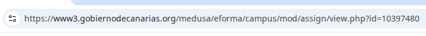
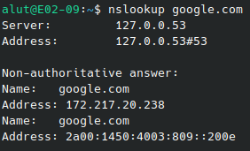
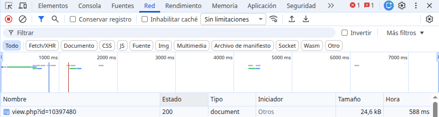
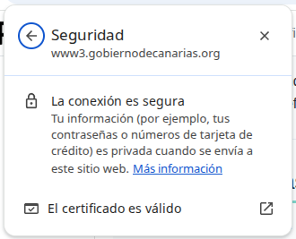
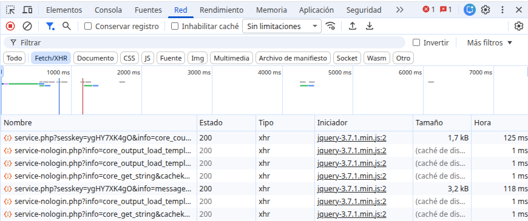

La web que he elegido
He elegido MediaMarkt Canarias porque es una tienda online de electrónica para buscar productos electrónicos como televisores, ordenadores, móviles, auriculares, etc.
Glosario
| Término | Definición con mis palabras | Ejemplo en mi web |
|---|---|---|
| Cliente | Es un programa o dispositivo que inicia solicitudes a un servidor para obtener datos o recursos. | Link del ejemplo Cliente |
| Servidor | Es un sistema informático que proporciona recursos, datos, servicios o programas a otros clientes por red. | Link del ejemplo Servidor |
| Servidor web | Un servidor web es un sistema informático que permite almacenar, procesar y entregar contenido web a los usuarios. | Link del ejemplo Servidor Web |
| Apache | Apache es un servidor de código abierto muy popular que se encarga de atender peticiones HTTP, dando recursos como HTML, imágenes, CSS o JavaScript para al navegador | Link del ejemplo Apache |
| URL | URL (Localizador Uniforme de Recursos o Uniform Resource Locator) es la dirección de un recurso único en internet para obtener páginas HTML, documentos CSS, imágenes y muchos más. | Link del ejemplo URL |
| Protocolo | Un protocolo es un conjunto de reglas que determinan cómo se comunican dos o más dispositivos en una red. | Link del ejemplo Protocolo |
| Dominio | Un dominio es una dirección única que permite identificar un sitio web en internet. | Link del ejemplo Dominio |
| Ruta | La ruta es la secuencia de páginas, pantallas o acciones que una persona sigue al navegar por un sitio web. | Link del ejemplo Ruta |
| Dirección IP | Una dirección IP es uan dirección única que identifica a un dispositivo en Internet o una red local. | Link del ejemplo Dirección IP |
| DNS | El DNS (Sistema de Nombres de Dominio) es un sistema que traduce nombres de dominio en direcciones IP. | Link del ejemplo DNS |
| HTTP | HTTP es un protocolo de la capa de aplicación que se utiliza para la comunicación entre navegadores y servidores web. | Link del ejemplo HTTP |
| HTTPS | HTTPS es un protocolo de comunicación seguro que utiliza HTTP y SSL/TLS para cifrar los datos transmitidos entre el navegador y el servidor. | Link del ejemplo HTTPS |
| Puerto | Un puerto es un punto final de comunicación que permiten que los datos fluyan entre un cliente y un servidor a través de Internet. | Link del ejemplo Puerto |
| Petición | Una petición es el mensaje que un cliente envía a un servidor, solicitando que se realice una acción específica. | Link del ejemplo Petición |
| Respuesta | La respuesta es el mensaje que un servidor envía al cliente en respuesta a una solicitud | Link del ejemplo Respuesta |
| Código de estado | Un código de estado es un número de 3 dígitos que envía y devuelve el servidor cuando el usuario realiza una solicitud de página. | Link del ejemplo Código de estado |
| Web estática | Una web estática es una página web que se entrega al navegador de usuario tal cual como esté almacenada | Link del ejemplo Web estática |
| Web dinámica | La web dinámica es una página web que genera contenido en tiempo real según las solicitudes del usuario. | Link del ejemplo Web dinámica |
| PHP | El PHP es un lenguaje de programación de propósito general, especialmente diseñado para el desarrollo web. | Link del ejemplo PHP |
| Base de datos | La base de datos es un sistema estructurado diseñado para almacenar y gestionar información de manera eficiente. | Link del ejemplo Base de datos |
| LAMP | LAMP es un acrónimo que representa un conjunto de herramientas de software para el trabajo de desarrollo web. | Link del ejemplo LAMP |
| JSON | JSON (JavaScript Object Notation) es un formato de intercambio de datos ligero que se utiliza comúnmente para el intercambio de información entre un servidor y una aplicación web. | Link del ejemplo JSON |
| XML | XML es un lenguaje de programación que permite estructurar y presentar datos en un formato de texto formateado. | Link del ejemplo XML |
Evidencias




